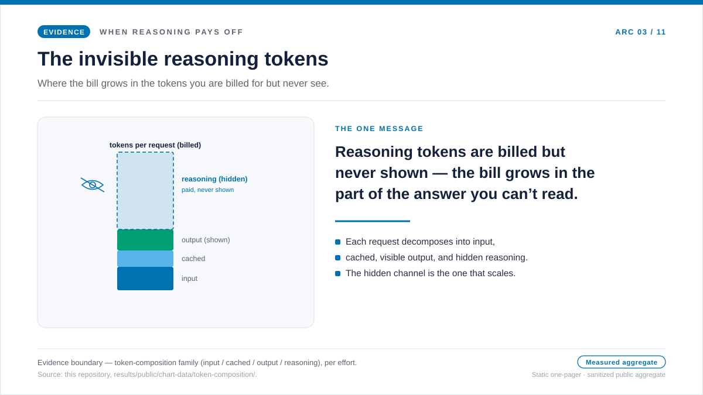
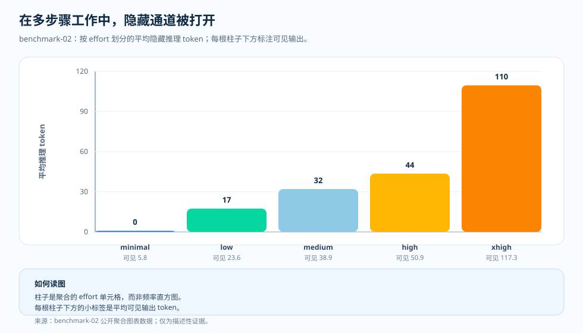
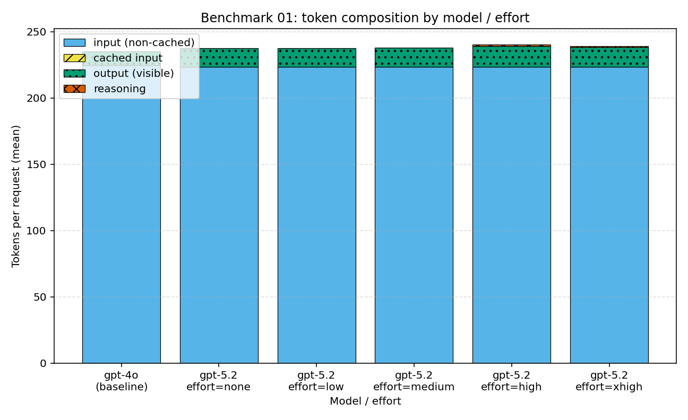

专题文章 · 隐藏的计费面
不可见的推理 token：那笔不出现在答案里的账单
迁移到推理模型之后——或者有人把推理强度调高之后——回答有时看上去依旧很短、很平常。可见的文本里，丝毫没有“花得更多”的迹象。可财务和遥测对同一个工作负载，看到的却是一张更大的账单。一个很自然的问题就此写出来：既然回答没有变长，成本到底跑哪儿去了？
我们为什么要检验这个
有一个习惯几乎是普遍的：当团队琢磨一个请求的成本时，伸手去抓的是看得见的东西——回答的长度。短回复感觉便宜，长回复感觉贵。在推理之前的大部分年代里，这个直觉准得足够好用。
由此就有了一件干净、值得验证的事：也许可见的回答长度真的解释了支出，那张更大的账单藏在某个没人注意到的、稍微长了一点的回复里；又或者，推理模型打破了这个直觉，成本转移到了用户永远读不到的隐藏推理 token 上。到底是哪一边在承担这次变化，图表能给出答案。
于是我们做了拆解。把每个计费请求拆成输入、缓存输入、可见输出、隐藏推理四块，再把这个拆解挨着成本、质量、延迟一起读——先读短事实回答切片，再读多步切片。两者的反差就是发现。在短事实工作上，隐藏推理通道几乎没有打开：可见输出在整条 effort 阶梯上只从约 14.0 到 14.8 个 token，隐藏推理从 minimal effort 的 0 开始，到峰值也接近不到 1 个 token。正因为如此，每个请求的账单保持平坦。不可见通道只在任务需要多步求解时打开，而在那里，它爬到了每个请求约 110 个推理 token。下面的单页概览把这组对比放进一个画面，随后各节再补上测得的细节。

问题
如果回答文本依旧很短，多出来的成本到底从哪儿来？
证据
把 benchmark-01 和 benchmark-02 的 token 构成，挨着成本、质量、延迟，作为一条证据链来读。
发现
短事实工作上隐藏推理通道接近零，所以账单保持平坦；多步工作上，同一通道从每个请求 0 增至约 110 个 token。
结论
哪怕回答依旧很短，也要用遥测追踪推理 token；把隐藏 token 预算当成回复不会展示的那部分账单来对待。

隐藏通道什么时候关闭，什么时候打开
benchmark-01 里真正有用的意外，是有件事没有发生。把 effort 旋钮调高，并没有悄悄撑大一个隐藏预算。minimal effort 平均约 14.0 个可见输出 token、0 个推理 token。extra-high effort 平均约 14.8 个可见输出 token，推理 token 仍不到 1 个。隐藏通道保持关闭，所以账单保持平坦，每个 gpt-5.2 单元都落在 gpt-4o 基线以下或持平。对一个短事实回答来说，模型根本没有什么需要反复斟酌的事。
多步切片里，同一套拆解讲了相反的故事。在那里，隐藏推理从 minimal effort 的 0 个 token 上升到 extra-high 的约 110 个；可见输出也从约 6 个上升到 117 个。这正是直觉会错过的情况：读者看到的文本，变成了“买了多少计算”的糟糕代理指标，因为越来越多的工作永远不会进入答案。教训不是短答案就便宜，而是只有 token 拆解会告诉你，隐藏预算到底有没有被花掉。
这张图该怎么读
柱子代表各档 effort 单元的聚合值，而不是单个请求的直方图。X 轴是 reasoning-effort 设置，Y 轴是每个请求的平均推理 token。每根柱子下方的小标签，是同一单元的平均可见输出 token 数。
这张图最好从下往上读。先问：可见输出有没有变化到足以解释账单？再去对照隐藏推理那根柱子。在短事实 control 里，两者都低，所以平坦账单不需要隐藏解释。多步切片里，真正爬升的是隐藏柱子。
源图各自补充了什么
token 构成解释了机制，但单凭它还不够。成本图显示账单有没有移动；质量图追问这笔支出有没有买来更好的回答；延迟图显示用户实际感受到的等待。三者凑齐，隐藏的那一面才读得出来：短事实 control 里，内部 token、支出、质量一起保持平坦；多步工作里，移动账单的正是内部 token。
这意味着什么
教训不是“推理 token 不好”。它们正是推理模型的本质所在。教训在于：推理 token 需要有活儿可干。如果任务只要求短事实回答，内部推理就可能成为一笔悄无声息的预算泄漏；如果任务需要多步求解，同样这些 token 就可能正是挣来质量提升的那一部分。
这也正是综述文章为什么总把成本、质量、延迟、token 构成并排着摆：账单并不是全都明明白白地写在回答里。
证据表
docs/blog/data/chart-data/token-composition/benchmark-01/tokens.json，请在证据仪表盘（分发的图表数据）里阅读。
| 证据行 | 指标 A | 指标 B | 它补充了什么 |
|---|---|---|---|
| benchmark-01 minimal effort | 可见输出 token 14.0 | 推理 token 0 | 短回答，隐藏通道关闭。 |
| benchmark-01 extra-high effort | 可见输出 token 14.8 | 不到 1 个推理 token | 依旧很短，依旧没有隐藏预算——所以账单保持平坦。 |
| benchmark-02 minimal effort | 可见输出 token 5.75 | 推理 token 0 | 多步任务，但 minimal 下通道仍关闭。 |
| benchmark-02 extra-high effort | 可见输出 token 117.3 | 推理 token 109.6 | 隐藏通道打开：内部工作几乎追上可见答案。 |
来源与证据边界
上面所有数字都能追溯到本仓库的公开产物，所有成本主张都按带日期的定价快照算出。“把推理 token 预算用遥测显式呈现出来”这一记账习惯，是本文自己的运维推断。下面两个 Tier 标明了：有文档记载的输入到哪里为止，推断又从哪里开始。
- [1] Tier 1 — 方法论契约：本仓库，
docs/05-methodology.md（v1.0）。每个单元 N = 20 个人工编写样本、R = 3 次重复、仅取公开聚合结果。图表解读正文都立足于这组冻结前提；误差棒是标准差而非置信区间，在 N = 20 下不主张 p 值。 - [2] Tier 1 — PAYG 定价快照：每个请求的成本按本仓库的
pricing/azure-openai-payg-2026-05.yaml算出。2026-05-19 访问：Azure OpenAI 定价页；存档。标价一动，隐藏 token 的账单也随之变化。 - [3] Tier 2 — benchmark-01 切片测量（control）：本仓库，
benchmarks/01-short-factual/analysis.json。这是“隐藏 token 保持平坦”这一读法的来源——推理 token 到 medium effort 都为 0，峰值约 1.35；可见输出只从 14.0 移到 14.8——也正因为如此，这个切片的每请求账单没有移动。 - [4] Tier 2 — 渲染后的图表数据（control）：本仓库，
docs/blog/data/chart-data/token-composition/benchmark-01/tokens.json是 token 拆解的来源。与docs/blog/data/chart-data/cost-curves-effort/benchmark-01/cost-per-request.json、quality.json、latency.json一起读，就是“隐藏通道、账单、等待都一起保持平坦”的配对证据。 - [5] Tier 2 — 多步测量（positive case）：本仓库，
docs/blog/data/chart-data/token-composition/benchmark-02/tokens.json。这是导读图所示爬升的来源——隐藏推理沿 effort 阶梯为 0, 17.433333, 32.0, 43.55, 109.55，可见输出从 5.75 升至 117.266667；不可见账单真正增长的地方就在这里。 - [6] 证据仪表盘：渲染后的 benchmark-01 和 benchmark-02 token 构成图，是审计同一批产物的可核查形态。
这些证据证明了什么、又没证明什么：它表明隐藏推理通道依赖任务——在短事实 control 上接近零，在多步切片上爬升到几乎追上可见输出。它并不证明同样的形状会出现在工具代理或综合类工作里。每个专题各有自己的测量。重点不是数值大小，而是习惯：只有 token 拆解能告诉你自己处在哪一种情况。
实用准则
- 不要只记总 token，要把每个请求的推理 token 记录在可见输出旁边。
- 给隐藏 token 预算设置告警，因为短回答也可能背着很大的内部成本。
- 只有当这种工作负载形态下配对的质量图真的动了，才往更高的 effort 提。
哪怕可见的回答依旧很短，也要用遥测测量推理 token——隐藏的 token 预算，正是回复不会展示的那部分账单。
下一篇： 多步任务：当推理终于值得一试 — 多花的推理什么时候带来的是质量提升，而不只是一张更大的账单？